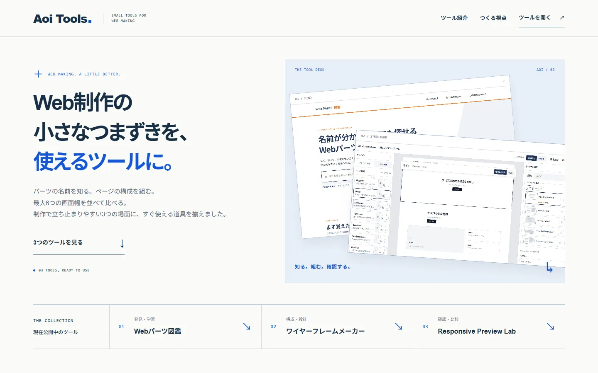
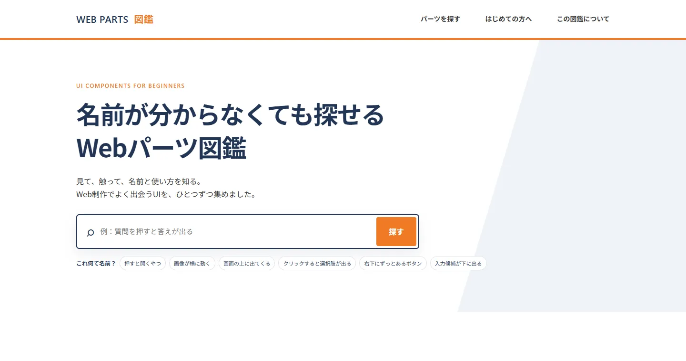
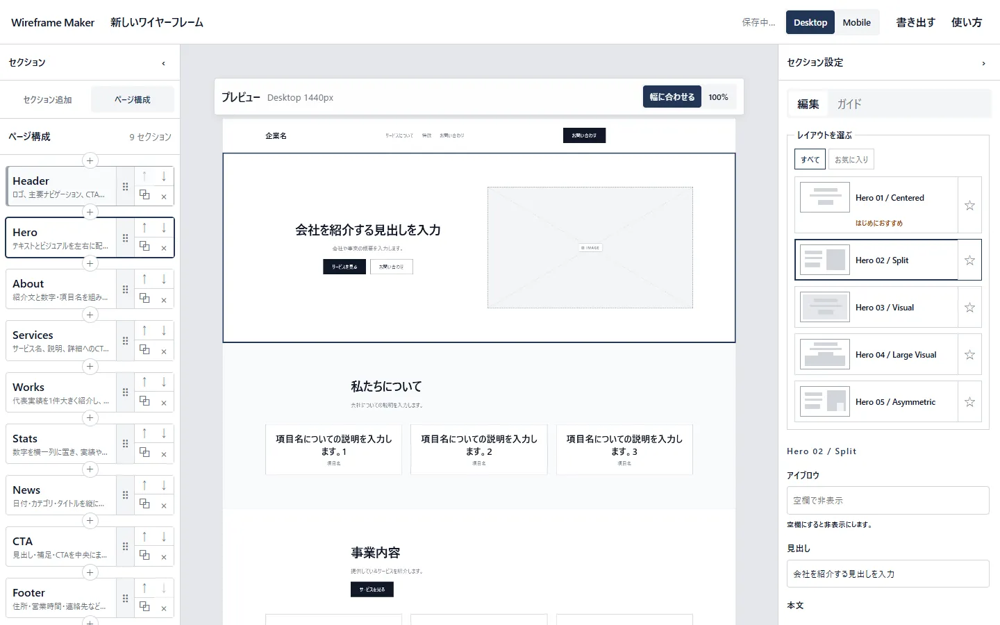
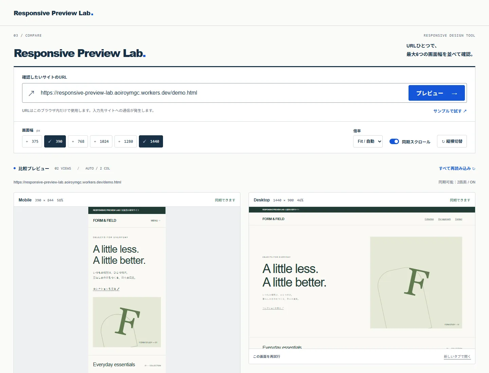

3つの道具を、ひとつの入口へ
3つのツールは、それぞれ別の目的から制作を始めましたが、作っていく中でWeb制作の流れの中で使えるツールとして関連していることに気づきました。
個別のツールとして公開するだけでなく、まとめて見つけやすくするために「Aoi Tools」としてシリーズ化し、各ツールを紹介する専用サイトも制作しました。
Aoi Toolsを見る ↗プロジェクト概要
Web制作の学習や実際の制作作業で感じた不便をもとに制作した、3つのWeb制作支援ツールシリーズ。企画・要件整理・UI設計から実装、確認、公開まで行いました。
制作目的
Web制作の中で繰り返し発生する「調べる」「構成を考える」「表示を確認する」といった作業を、必要な機能に絞ったツールで使いやすくすること。
担当範囲
企画 / 要件整理 / 情報設計 / UI・UX設計 / デザイン方針策定 / 実装ディレクション / 動作確認 / 改善 / 公開
AI活用
ChatGPTで要件や仕様を整理し、自身でデザインの方向性を決定したうえでCodexを使って実装。完成した画面を自身で確認し、UI・UXやデザインの知識と照らし合わせながら修正・改善しました。
使用技術
HTML / CSS / JavaScript / React / TypeScript / Vite / Next.js / Cloudflare Workers
公開サイト
Aoi Toolsは、最初から3つのツールをまとめて作ろうと考えていたわけではありません。
Web制作を学んでいた頃、専門用語の意味が分からないまま使うことが多く、「見た目や動きと一緒に確認できたら分かりやすい」と考え、Webパーツ図鑑を制作しました。
その後、普段の制作で時間がかかっていたワイヤーフレーム作成を効率化するWireframe Maker、PCとスマートフォンの表示を並べて確認できるResponsive Preview Labへと展開。自分が学習や制作の中で感じた不便を一つずつツールにしたものが、Aoi Toolsです。
ツール名を選ぶと、画面と制作のポイントを切り替えられます。

Web制作を学んでいた頃、専門用語の意味が分からないまま使うことが多かった経験から制作しました。名称だけを並べるのではなく、実際の見た目や動きを確認しながら、用途やコードまで理解できる形を目指しています。

ワイヤーフレーム作成に毎回時間がかかっていたことから、よく使うHero、Features、FAQ、CTAなどをテンプレート化しました。色や装飾よりも、まずページ全体の構成を考えることに集中できるようにしています。

Webサイトを確認するとき、PC表示とスマートフォン表示を何度も切り替える手間を減らしたいと考えて制作しました。URLを一度入力するだけで、異なる画面幅を同時に確認できます。
当初は6画面を一度に表示する仕様でしたが、完成後に自分で使ってみると、基本的な用途ではPCとスマートフォンの2画面が最も比較しやすいと判断。初期表示を2画面に絞りました。
制作では、まず自分の中にあるゴールをChatGPTとの対話で整理し、必要な機能や仕様を固めました。画面の完成イメージやデザインの方向性を決めた上でCodexで実装し、完成した画面を自分で確認しながら修正を重ねています。
AIにすべてを任せるのではなく、自分の考えを整理して形にし、デザインやUI・UXの知識と照らし合わせながら改善するためのツールとして活用しました。
自分で確認 → 修正・改善 → 再度AIへ ↺

3つのツールは、それぞれ別の目的から制作を始めましたが、作っていく中でWeb制作の流れの中で使えるツールとして関連していることに気づきました。
個別のツールとして公開するだけでなく、まとめて見つけやすくするために「Aoi Tools」としてシリーズ化し、各ツールを紹介する専用サイトも制作しました。
Aoi Toolsを見る ↗